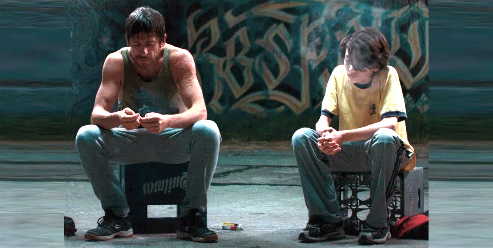

El domingo 23 de abril a las 18hs se inaugura en el Museo Almafuerte, avenida 66Nº 530, el ciclo “Cine del Mundo” con la proyección del film de Alfonso Arau, “Como agua para chocolate”. Con una frecuencia quincenal, los vecinos podrán disfrutar films como “El beso de la mujer araña” dirigida por Héctor Babenco o “El amante” de Jean-Jacques Annaud.
Noticias
Cine en el Almafuerte
Diego Cremonesi y Arturo Castro Godoy visitan la sala Select en el estreno de “Rinoceronte”

En el marco del ciclo de Cine Nacional Espacio INCAA, el jueves 20 a las 18.30hs, en el primer piso del Centro Cultural de calle 50 entre 6 y 7, se estrenará “Rinoceronte” con la presencia de su director, Arturo Castro Godoy y el actor platense, Diego Cremonesi. “Rinoceronte” 2022. 85 min. Damián, un niño de 11 años, es separado de una familia negligente y violenta, y llevado a vivir a un hogar de niños por intervención del estado. Acompañado por Leandro, un asistente social con una historia personal similar a la suya, Damián tendrá que aceptar que su vida anterior quedó atrás y no va a volver, pero todavía es posible construir un comienzo nuevo en donde haya lugar para no sentirse tan solo.
Reabre la Sala Ginastera del Teatro Argentino de La Plata
Con la ejecución de la “Novena Sinfonía” de Beethoven, a cargo de la Orquesta Estable y el Coro Estable, se pondrá fin a un largo período de inactividad. De esta manera, los bonaerenses recuperarán uno de los espacios más preciados de su vida cultural. La programación 2023 incluirá conciertos sinfónicos, ópera y ballet.

Arte y literatura: Manuel Rubín llega al Ciclo Literario del Palacio López Merino
La Municipalidad invita a participar de la segunda entrega del Ciclo Literario mensual del Complejo Bibliotecario Municipal Palacio Francisco López Merino que tendrá lugar el jueves 20 de abril a las 18 hs. con entrada libre y gratuita. La iniciativa, de la Secretaría de Cultura y Educación, ofrece a los autores presentes en la reunión la oportunidad de dar a conocer sus trabajos, además de contar con invitados especiales para tratar temas en particular mediante charlas y debates. .